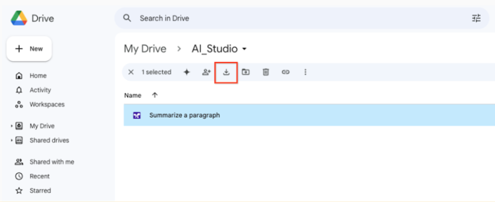

Migrate from the Gemini Developer API to the Gemini API in Vertex AI¶
If you are new to Gemini, the fastest way to get started is by using the quickstarts.
As your generative AI solutions mature, you may need a platform for building and deploying them end-to-end. Google Cloud provides a comprehensive ecosystem of tools to enable developers to harness the power of generative AI, from initial app development to deployment, hosting, and managing complex data at scale.
Google Cloud's Vertex AI platform offers a suite of MLOps tools that streamline the usage, deployment, and monitoring of AI models for efficiency and reliability. Additionally, integrations with databases, DevOps tools, logging, monitoring, and IAM provide a holistic approach to managing the entire generative AI lifecycle.
Common use cases for Google Cloud offerings
Here are some examples of common use cases that are well-suited for Google Cloud offerings:
- Productionize your apps and solutions: Products like Cloud Functions and Cloud Run let you deploy apps with enterprise-grade scale, security, and privacy. Find more details in the Security, Privacy, and Cloud Compliance on Google Cloud guide.
- Use Vertex AI for end-to-end MLOps: Leverage capabilities from tuning to vector similarity search and ML pipelines.
- Trigger your LLM with an event-driven architecture: Use Cloud Functions or Cloud Run.
- Monitor app usage: Integrate with Cloud Logging and BigQuery.
- Store data securely at scale: Use services like BigQuery, Cloud Storage, and Cloud SQL.
- Perform retrieval-augmented generation (RAG): Use data in the cloud with BigQuery or Cloud Storage.
- Create and schedule data pipelines: Schedule jobs using Cloud Scheduler.
- Apply LLMs to your data in the cloud: If you store data in Cloud Storage or BigQuery, you can prompt LLMs over that data to extract information, summarize, or ask questions about it.
- Leverage Google Cloud data governance: Use data governance/residency policies to manage your data lifecycle.
üìö Differences between the Gemini Developer API and the Gemini API in Vertex AI¶
The following table summarizes the main differences between the Gemini Developer API and the Vertex AI Gemini API to help you decide which option is right for your use case.
| Features | Gemini Developer API | Vertex AI Gemini API |
|---|---|---|
| Gemini models | Gemini 1.5 Flash, Gemini 1.5 Pro | Gemini 1.5 Flash, Gemini 1.5 Pro |
| Sign up | Google account | Google Cloud account (with terms agreement and billing) |
| Authentication | API key | Google Cloud service account |
| User interface playground | Google AI Studio | Vertex AI Studio |
| API & SDK | Server and mobile/web client SDKs:
|
Server and mobile/web client SDKs:
|
| No-cost usage of API & SDK | Yes, where applicable | $300 Google Cloud credit for new users |
| Quota (requests per minute) | Varies based on model and pricing plan (see detailed information) | Varies based on model and region (see detailed information) |
| Enterprise support | No | Customer encryption key Virtual private cloud Data residency Access transparency Scalable infrastructure for application hosting Databases and data storage |
| MLOps | No | Full MLOps on Vertex AI (examples: model evaluation, Model Monitoring, Model Registry) |
‚öôÔ∏è Migrate to Gemini API in Vertex AI¶
This section shows how to migrate from the Gemini Developer API to the Gemini API in Vertex AI.
flowchart LR
A[Start: Set up Vertex AI] --> B[Migrate Python Code]
B --> C[Migrate Prompts]
C --> D[Upload Training Data]
D --> E[Finish: Delete old API Key]Considerations when migrating
- You can use your existing Google Cloud project (the same one you used to generate your Gemini API key) or you can create a new Google Cloud project.
- Supported regions might differ between the Gemini Developer API and the Gemini API in Vertex AI. See the list of supported regions for generative AI on Google Cloud.
- Any models you created in Google AI Studio need to be retrained in Vertex AI.
Step 1: Start using Vertex AI Studio
The process you follow to migrate to the Gemini API in Vertex AI is different depending on whether you already have a Google Cloud account.
Note: Google AI Studio and the Gemini Developer API are available only in specific regions and languages. If you aren't located in a supported region, you can't start using the Gemini API in Vertex AI.
To learn how to migrate to the Gemini API in Vertex AI, click the tab that corresponds to your Google Cloud account status:
- Sign in to Google AI Studio.
- At the bottom of the left navigation pane, click Build with Vertex AI on Google Cloud. The Try Vertex AI and Google Cloud for free page opens.
- Click Agree & Continue. The Get Started with Vertex AI studio dialog appears.
- To enable the APIs required to run Vertex AI, click Agree & Continue. The Vertex AI console appears.
- Sign in to Google AI Studio.
- At the bottom of the left navigation pane, click Build with Vertex AI on Google Cloud. The Create an account to get started with Google Cloud page opens.
- Click Agree & Continue. The Let's confirm your identity page appears.
- Click Start Free. The Get Started with Vertex AI studio dialog appears.
- To enable the APIs required to run Vertex AI, click Agree & Continue.
Step 2: Migrate your Python code
The following sections show code snippets to help you migrate your Python code to use the Gemini API in Vertex AI.
Vertex AI Python SDK Setup
On Vertex AI, you don't need an API key. Instead, Gemini on Vertex AI is managed using IAM access, which controls permission for a user, a group, or a service account to call the Gemini API through the Vertex AI SDK.
While there are many ways to authenticate, the easiest method for authenticating in a development environment is to install the Google Cloud CLI and then use your user credentials to sign in to the CLI.
To make inference calls to Vertex AI, you must also make sure that your user or service account has the Vertex AI User role.
Install the client¶
Generate text from a text prompt¶
Generate text from text and image¶
from vertexai.generative_models import Part
multimodal_model = GenerativeModel("gemini-1.5-flash-001")
response = multimodal_model.generate_content(
[
"What is shown in this image?",
Part.from_uri(
"gs://cloud-samples-data/generative-ai/image/scones.jpg",
mime_type="image/jpeg",
),
]
)
print(response.text)
# Example response:
# The image shows a flat lay of blueberry scones arranged on parchment paper. There are ...
Generate multi-turn chat¶
Step 3: Migrate prompts to Vertex AI Studio
Your Google AI Studio prompt data is saved in a Google Drive folder. This section shows how to migrate your prompts to Vertex AI Studio.
- Open Google Drive.
- Navigate to the AI_Studio folder where the prompts are stored. 
- Download your prompts from Google Drive to a local directory.
Note: Prompts downloaded from Google Drive are in the text (txt) format. Before you upload them to Vertex AI Studio, convert them to JSON files. To do this, change the file extension from .txt to .json.
- Open Vertex AI Studio in the Google Cloud console.
- In the Vertex AI menu, click Prompt management.
- Click Import prompt.
- In the Prompt file field, click Browse and select a prompt from your local directory. To upload prompts in bulk, you must manually combine your prompts into a single JSON file.
- Click Upload. The prompts are uploaded to the My Prompts tab.
Step 4: Upload training data to Vertex AI Studio
To migrate your training data to Vertex AI, you need to upload your data to a Cloud Storage bucket. For more information, see Introduction to tuning.
Step 5: Delete unused API Keys
If you no longer need to use your Gemini API key for the Gemini Developer API, follow security best practices and delete it.
- Open the Google Cloud API Credentials page.
- Find the API key that you want to delete and click the Actions icon.
- Select Delete API key.
- In the Delete credential modal, select Delete.
Deleting an API key takes a few minutes to propagate. After propagation completes, any traffic using the deleted API key is rejected.
Important: If you delete a key that's still used in production and need to recover it, see gcloud beta services api-keys undelete.
üìö Related Questions¶
What are the main advantages of migrating from the Gemini Developer API to the Gemini API in Vertex AI?
Migrating to the Gemini API in Vertex AI is beneficial as your generative AI solutions mature. Vertex AI provides a comprehensive platform for building and deploying applications end-to-end with enterprise-grade features. Key advantages include:
- MLOps Capabilities: Access to a full suite of MLOps tools for model evaluation, monitoring, and management.
- Enterprise Support: Features like customer-managed encryption keys, Virtual Private Cloud (VPC), data residency, and access transparency.
- Integration: Seamless integration with other Google Cloud services like Cloud Run for deployment, BigQuery and Cloud Storage for data management and Retrieval-Augmented Generation (RAG), and Cloud Logging for monitoring.
- Scalability and Security: Deploy applications with enterprise-grade scale, security, and privacy, leveraging Google Cloud's robust infrastructure.
How does authentication change when moving from the Gemini Developer API to the Vertex AI Gemini API?
Authentication methods are a key difference between the two APIs. The Gemini Developer API uses an API key for authentication. In contrast, the Gemini API in Vertex AI uses Google Cloud Identity and Access Management (IAM). Instead of an API key, you authenticate using a Google Cloud service account, and access is controlled by assigning roles, such as the "Vertex AI User" role, to a user, group, or service account.
I have prompts saved in Google AI Studio. How do I migrate them to Vertex AI Studio?
To migrate your prompts from Google AI Studio to Vertex AI Studio, follow these steps:
- Open Google Drive and navigate to the AI_Studio folder where your prompts are stored.
- Download the desired prompt files (which will be in
.txtformat) to your local machine. - Convert the downloaded files to JSON format by changing the file extension from
.txtto.json. - In the Google Cloud console, go to Vertex AI Studio and select Prompt management.
- Click Import prompt, browse to your local JSON file, and upload it. The prompt will then appear in the My Prompts tab.
After migrating to Vertex AI, do I need to retrain the custom models I created in Google AI Studio?
Yes. According to the documentation, any models that you created and trained in Google AI Studio must be retrained in Vertex AI after you migrate.
I've successfully migrated my application to use the Vertex AI Gemini API. What should I do with my old Gemini API key?
As a security best practice, you should delete any API key that is no longer in use. You can delete your old Gemini API key from the Google Cloud API Credentials page. Find the key, click the Actions icon, and select Delete API key. If you accidentally delete a key that is still in use, it can be recovered for a limited time using the gcloud beta services api-keys undelete command.
üîó What's next¶
- Try a quickstart tutorial using Vertex AI Studio or the Vertex AI API.